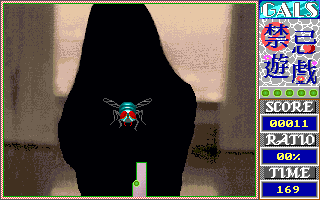

名稱：禁忌遊戲 (中文版)
簡介：長重資訊1992年出品的18禁益智遊戲，共有6大關，每關有3個小關，每過一關便會有
一張美女圖，全過的話會再多顯示一張。遊戲的規則便是利用畫線方式，儘量將區域
圍起來，但畫線的同時不能被怪物碰到。在相當早期（約小蜜蜂時代）的電動玩具場
也有同樣的遊戲，不過現今玩起來似乎太單調了些，只有美女圖還差強人意。大概只
有懷舊的人，跟想看美女圖的玩家才會來玩這個遊戲吧。

保護：顏色密碼，破解碼：
PASS.EXE（先用UNP解壓）
74 13 FF 46 FC
90 90 -- -- --
75 08 33 C0 5F
90 90 -- -- --
74 F5 25 00 FF
EB 73 -- -- --
或
3B 46 0A 75 05 B8 01 00
-- -- -- -- 00 -- -- --
或
LADYLOVE.EXE
33 C0 8B D8 8B C8 8B D0 8B E8
C6 06 30 39 CB 90 -- D8 -- --
修改：LADY.EXE（先用UNP解壓）
1.次數不減
FF 0E AF 0F 83 3E
90 90 90 90 -- --
2.時間不減
2B 06 2C 16 A3 89 0C
90 90 90 90 -- -- --
操作：Shift + 上下左右鍵 = 圍地
提示：利用怪物會追你的特性，先修出一個快封閉的角落（約佔１／４畫面），誘它進去，
再迅速封起，即可容易過關。